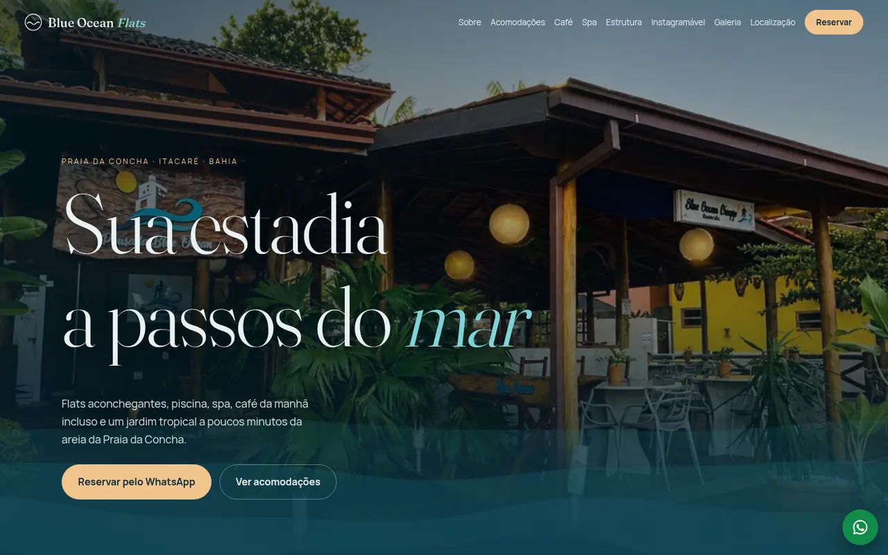

Open the official Blue Ocean Flats site (opens in a new tab)01 · Client site · Itacaré
Blue Ocean Flats
Official website for a boutique guesthouse on Praia da Concha, in Itacaré. The page covers the house and six flat types with photo galleries: Double, Master, Master Família, Master Luxo Família, Twin, and Delux. It also covers breakfast, the in-house spa, amenities, a photo carousel, a reviews block that cites Expedia and Kayak, the location, and WhatsApp booking. Deployed on Hostinger. A copy of the same site is on GitHub Pages, and the content is updated when the client asks.
blueoceanflats.com (opens in a new tab) GitHub Pages copy (opens in a new tab)